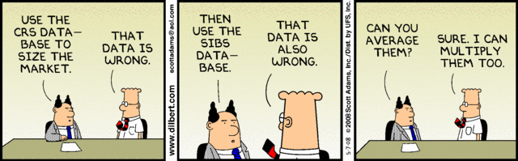

Types of Data
Overview
For this unit, we will discuss different types of data and how data type influences the analysis approach.

Objectives
- Understand different types of data
- Know that different data types require different analysis approaches
- Know different base data types in R and how to deal with them
- Know about important data structures in R and how to deal with them
What is data
Broadly speaking, we can define data as anything that (potentially) contains information. Data can be images, sound, video, text, or a combination of any of these. You most likely encounter data in spreadsheets, with observations as rows and variables as columns. However, data is getting much more varied and complex. Data from fitness devices such as Fitbits, Tweets, Facebook posts, purchasing behavior, movement, etc. are all streams of data that can contain useful information.
The kind of data determines the amount of processing that needs to be done before analysis. Somehow you need to turn your data into something that you can analyze. While analysis of images, video, and text is undoubtedly interesting, it is not the focus of this course. But you are still welcome to use such sources of data for your project.
In this course, we focus on the data source that you are most likely to encounter in your analyses. And that data source is quite likely the “(messy) spreadsheet” type, containing bits of information collected on individuals. You are of course welcome to play around with other data types during this course, e.g. for your course project.
If you want to hear someone else’s definition and explanation of what data is, you can watch this video by Jeff Leek.
Types of Variables
We usually refer to pieces of data/information (e.g., gender and age) as variables. Different types of variables exist, and depending on the type, the analysis will be different. The main categories are:
Quantitative: This data type, also called interval data, generally allows one to do certain mathematical operations, e.g., subtraction or addition. Different subcategories exist:
- Continuous: Can, in principle, be any number. Examples are height, weight, age, etc.
- Discrete: Can only take discrete (integer) values, e.g., the number of siblings a person has.
- Fraction/Proportion: Continuous, but between 0-1.
- Sometimes other special forms (e.g., only positive, only in some range).
- A special case of quantitative data is ratio data. Data measured on a ratio scale have all the properties of interval data, and in addition, the zero value is a “true zero”. That is, a value of zero represents an actual minimum possible variable. For example, mass and distance are ratio data. Multiplying and dividing ratio scale data makes sense (e.g. a 2 kilogram pumpkin has twice the mass of a 1 kilogram pumpkin).
Qualitative: Broadly speaking, qualitative data are those that do not allow one to perform any mathematical operations such as subtraction or addition. Qualitative data which has no intrinsic order is also caled nominal (scale) data. Types of such data are:
- Descriptive: e.g., free text data from participant interviews.
- Categorical: e.g., hair color, ethnicity. No ordering is possible. A special and common case of categorical is data with 2 categories, e.g., yes/no, dead/alive, diseased/healthy.
Ordinal: This is usually considered a type of categorical variable, but it is worth thinking about it as something on its own. Ordinal data fall in between being strictly quantitative or strictly qualitative. For instance, if a question asks a person to rank their level of a pain on a scale from 1-10, a 7 is clearly higher than a 6, and a 6 higher than a 5. But it’s unclear if the difference between 5 and 6 is the same as 6 and 7. Thus it is not clear if one can do operations like subtraction (to get a difference of 1 in each case). Another example is level of education, which a survey might collect in categories of ‘no high school’, ‘high school’, ‘some college’, ‘college degree’, ‘graduate degree’. We could code that with numbers 1-5, and in some sense these items are ordered, but it’s unclear if one is justified in considering the difference between ‘high school (2)’ and ‘some college (3)’ the same as ‘some college (3)’ and ‘college degree (4)’.
Analysis approaches based on data
The type of variables will influence the analysis approach. That’s especially true for the outcomes of interest, less so for the independent, predictor variables.
Methods applied to quantitative outcomes are usually referred to as regression approaches, with different variants depending on the subtype (e.g., linear regression for continuous, Poisson regression for discrete). Methods applied to categorical outcomes are usually referred to as classification approaches.1 If you have an ordinal outcome, you can use ordinal regression. Alternatively, you can treat the outcome as unordered categorical or as continuous (depending on how you code them, i.e., in R as a factor or numeric). There are no rules as to when it is ok to treat an ordinal variable as fully quantitative. It is often done but needs to be justified. You can always treat it as categorical, but then you lose some information, namely the ordering.
In the machine learning literature, supervised learning refers to cases when we have a specific outcome of interest. This kind of data is most common. For data where there is no clear outcome, analysis methods are usually referred to as clustering approaches and are also called unsupervised learning methods.
We will discuss and apply some of those methods in more detail when we begin our discussion of analysis methods.
Working with different data types in R
To efficiently work with data in R, you need to understand how the types of data described above are represented in and handled by R.
The following is a summary of the most important data types in R. I’m also listing useful packages to deal with them. You have already seen some of the information I describe below. Now would be a good time to revisit the Types section of the Posit Programming Basics recipe and to revisit chapter 3 of IDS.
Basic data types
Characters/strings: A string is a collection of characters. You will often hear the labels “character” and “string” used interchangeably, though strictly speaking, a string is a collection of characters. Everything can be encoded as a character string. Unfortunately, you cannot do a lot of analysis with strings. For instance, if you have the numbers 2 and 3, you can add and subtract. But if you code those numbers as characters “2” and “3”, you can’t do much with them. Thus, transforming characters into other, more useful categories (if applicable) is a common task. It is common that you read in some data and there is a variable which should be numeric, but some entries are not (e.g., the original spreadsheet shows something like “<10”). In this case, R reads all of these variables as characters. You then have to go in, clean the “<10” value, and convert the rest to numeric. Sometimes you do want to work with strings directly. There are many tools and packages in R that are helpful, including base R command. The stringr package is particularly useful.
It is quite likely that you will need to work with strings at some point during a data analysis, even if it is only to find specific values, clean up variable names, etc. Thus, learning more about this topic is a good idea. A very powerful, and also very confusing way to deal with strings is to use what are called regular expressions (or regex for short). This concept applies to any programming language, not just R. Being at least somewhat familiar with the concept of regular expressions is useful.
If you have no experience manipulating strings, I suggest you work through the Strings chapter (14) of R4DS, and do the exercises. The string processing chapter (25) of IDS contains further good material that is worth working through. Another good source is the Character Vectors chapter in the STAT 545 book by Jenny Bryan. Take a look at those various sources, decide which one is right for your level and go through some of them. And/or consult them as needed.
Factors: That’s what R calls categorical variables. They can be ordered/ordinal or not. You need to make sure variables that should be coded as a factor are, and that those that shouldn’t be aren’t. For instance, you might have a variable with entries of 0, 1, and 2. Those could be numeric values, e.g., the number of siblings a person has. Or it could be a factor coding for 3 types of ethnicity (unordered), or 3 levels of socioeconomic status (ordered). You need to make sure it is coded as factor or numeric, based on what you know about the variable. An excellent package to work with factors is the forcats package.
To learn some more about factors, you might want to go through the Factors chapter of R4DS, and do the exercises.
Logical: You can think of a logical variable as a type of categorical variable with 2 categories, TRUE and FALSE. Alternatively, in R, 0 is interpreted as FALSE and 1 as TRUE (and vice versa). You will use those logical values often when checking your data, e.g., if you want to see if your variable x is greater than 5, then the R command x > 5 will return either TRUE or FALSE, based on the value of x.
Numeric (double/integer): Numeric values that are either integers or any other numeric value (double). You generally do not need to care too much how exactly your numeric values are coded. Often, you can treat integers as general numeric value. (In R, a general numeric variable is called double.) You might rarely come across a case where some analytic method or other bits of code requires integers to be specified as such. In R, you can use the as.integer() function to convert general numeric values to integers. You don’t really need any other special packages in R to deal with numeric values. Note that when you type an integer value, e.g. x <- 2, into R, this is considered numeric by default. If you want to make sure it is treated as integer, add an L, e.g. x <- 2L.
Date/time: While dates are a type of continuous numeric variable, you should assign the date class explicitly in R, which allows you to do more with them. Dates are quite difficult to work with in base R (which usually calls them POSIX variables). The lubridate package is a good package to work with dates, and is more user friendly. Others exist.
To learn some more about dates and times in R, check out the Dates and times chapter of R4DS as well as the Parsing Dates and Times chapter of IDS.
Data structures in R
The basic data types in R are usually combined into larger objects. The main ones in R are described in the following.
Vectors: vectors are a simple collection of elements in a single row or column. In R, the easiest way to create vectors is with the concatenate command, c(). An example is x1 <- c(3,12,5). A single vector can contain only one element type (e.g., all characters or all numeric). If you try to mix and match, everything ends up as a character. Type the command for x1 and x2 <- c(6, 5, 'h') into R and apply the class() command to both x1 and x2 and note the difference.
Matrices: A matrix is a collection of elements in rows and columns. A matrix can contain only one element type. You can think of a matrix as a collection of horizontal vectors stacked on top of each other or vertical vectors next to each other.
Data frames: A data frame has the same shape as a matrix, i.e., it is a collection of elements in rows and columns. The critical difference is that each column of a data frame can contain elements of different types. This makes it ideal for storing data, with each row and observation and each variable in a column, and different columns potentially with different data types. E.g., column 1 could be age and numeric, and column 2 could be gender and be categorical, etc.
A list: Lists are the most flexible data types in R. You can combine different elements as in data frames. Further, each element can be of varying length. For instance, you could have the first list element contain a person’s name, the second list element their age, the third their address. You can even have other elements inside lists, for instance, you could have a data frame as a list element containing the names and ages of the person’s parents. Lists are very flexible, and if you get deeper into data analysis, you’ll be working with them. The downside is that because they are more flexible, they can also be a bit more confusing to work with. With enough practice, you’ll figure it out. Also note that almost every function in R that returns something a bit more complicated to you (e.g., the result from a linear fit), returns it as a list.
Other types of data structures exist; they are often introduced by specific R packages. An important one to know is the tibble which is a type of data frame used in the tidyverse. It is similar, but not exactly like a data frame. You can read more about tibbles on its package website and in R4DS chapter 10.
For some more information, you can check out this video by Jeff Leek where he talks about the types of data and structures I described above. He also shows some R/coding examples and discusses the important concept of missing values and NA.
Non-rectangular data
We don’t have the time to cover analysis of all the variety of data that exists. As stated before, our focus here was on the analysis of what is sometimes called rectangular data. We have observations (individual units of data) generally as rows, and variables (outcome and predictors) as columns. This is still the most common type of data, especially in public health and more generally the life sciences. However, more complex types of data are rapidly increasing in frequency and importance. If the data has a different structure, it will usually require different, specialized analysis approaches. The good news is that most of what we cover in this course still applies. The difference is often in the processing of the data, and the exact way data and models are combined.
At the end of the course, there is a page that briefly goes into other types of data (time-series, text, and some others) and provides very brief pointers for further resources, should you be interested in data of that type.
Footnotes
Logistic regression, which you might be familiar, is used for classification. However, the underlying model predicts a quantitative outcome (a value between 0 and 1 usually interpreted as a probability), which is then binned to make categorical predictions.↩︎